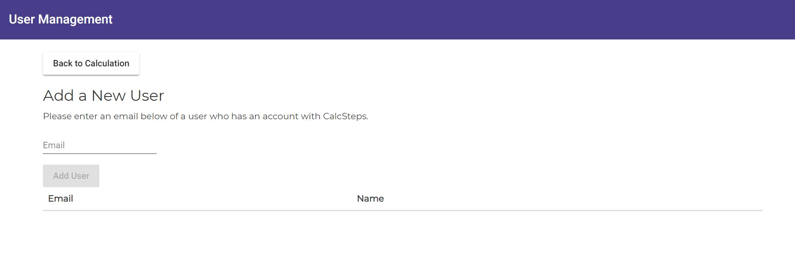

<mat-tab-group>
  <mat-tab label="Overview">
    <h3>
      Overview - Gold/Enterprise Only Function
    </h3>
    <p>
      This feature enables the owner of the calculation to link other users to the specific calculation so that they
      can access this and run a calculation of their own using this one.
    </p>
    <p>
      If you have signed up to our Gold or Enterprise subscriptions then you can add other users who can access the
      calculation, if you are a Gold user then you can add up to 10 users or if you are Enterprise unlimited users who
      are signed up to Calc-Steps who can view the calculation.
    </p>
    <br />
    
    <br />
    <mat-divider></mat-divider>
    <h3>Add User</h3>
    <p>
      As previously stated the user you wish to add needs to be a user of Calc-Steps and signed up and not in
      subscription.
    </p>
    <mat-divider></mat-divider>
    <h3>User Not Found</h3>
    <p>
      If the user can not be found then an error message will be displayed informing the owner that the user can't be linked.
    </p>
  </mat-tab>
</mat-tab-group>
